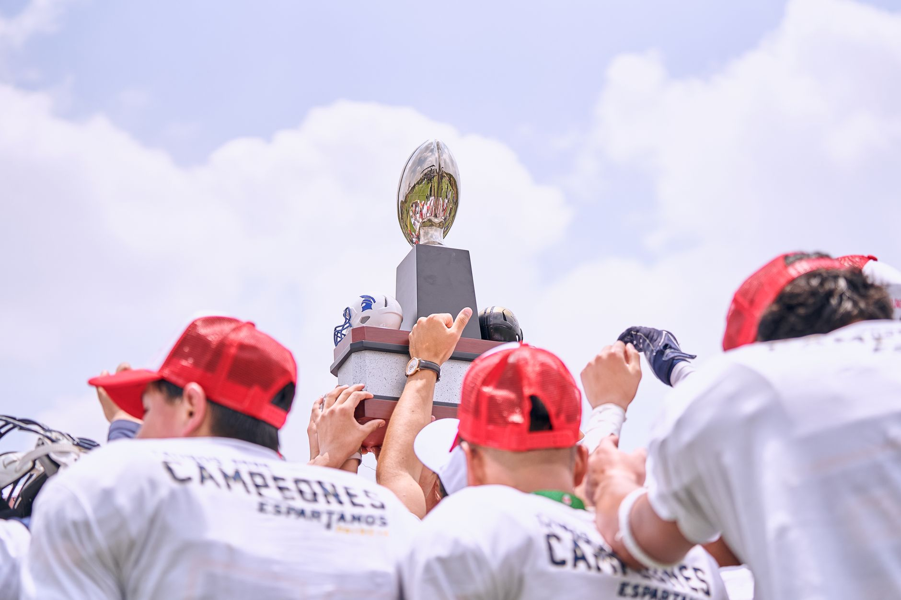

A dominant series sweep in Houston
The Atlanta Braves entered their series against the Houston Astros with significant pressure on their shoulders. As a key battle for divisional supremacy, every pitch and every swing carried the weight of the postseason implications. Instead of a close-fought battle, the Braves delivered a masterclass in execution, sweeping the three-game series to secure the NL East crown.
The momentum shifted early in the first game of the series, where the Braves' pitching staff completely neutralized the Astros' power hitters. This defensive stability allowed the offense to take calculated risks, knowing that their bullpen could hold any lead. By the time the final out was recorded in the third game, the Braves had established themselves as the team to beat in the National League.
Clinching the NL East title
Clinching a division title is a milestone that defines a successful season. For the Braves, this achievement is not just about the trophy, but about the consistency they have shown throughout the year. Navigating the competitive landscape of the NL East requires mental toughness, and this squad has proven they possess the grit necessary for October baseball.
We worked hard for this moment every single day of the season, and while we are celebrating now, we know the real work begins in the playoffs.
The atmosphere in the clubhouse following the clinching win was a mix of pure jubilation and focused determination. While players took moments to celebrate with family and teammates, the coaching staff has already begun preparing the roster for the next stage of the journey. The goal is no longer just winning the division, but securing a World Series ring.
Key players driving the success
No championship run happens without standout individual performances. Throughout this series against the Astros, several key contributors rose to the occasion. The core rotation provided much-needed stability, allowing the manager to utilize the bullpen more effectively in high-leverage situations.
On the offensive side, the middle of the lineup provided the consistent run production required to overcome Houston's elite defense. Whether it was timely hitting with runners in scoring position or aggressive baserunning, the Braves showcased a complete offensive approach that kept the Astros on their heels for the duration of the series.
Looking ahead to the postseason
While the division title is a massive achievement, the Braves are well aware that the postseason brings a different level of intensity. The road to the World Series is paved with elite pitching and unpredictable momentum shifts. The team must maintain their current level of play to avoid complacency as they transition from divisional play to the playoffs.
Scouting reports for potential playoff opponents are already being analyzed. The Braves' ability to adapt to different pitching styles and defensive alignments will be crucial. They have shown they can win both high-scoring shootouts and low-scoring pitching duels, which provides them with a versatile toolkit for the upcoming months.
Comparing divisional battles across the league
The excitement in the NL East is mirrored by the competitive nature of other divisions across Major League Baseball. As teams fight for playoff positioning, we see similar patterns of dominance and underdog stories emerging. Seeing a team like the Braves assert their will over a powerhouse like the Astros is a testament to the league's high level of competition.
For instance, if you follow the American League, you can see similar high-stakes drama unfolding. Much like the Braves' recent surge, we recently saw how Wyatt Langford Heroics Push Rangers Into First Place, proving that individual brilliance can shift the entire trajectory of a division race. These moments of excellence are what make baseball such a captivating sport for fans worldwide.
As the regular season winds down, every game becomes a must-win scenario. Whether it is the Braves clinching the East or other contenders fighting for Wild Card spots, the intensity is reaching a fever pitch. Stay tuned to our blog for more updates on how these divisional battles will shape the postseason landscape.
See Also
If you enjoyed this Baseball News article, check out Wyatt Langford Heroics Push Rangers Into First Place for more useful reading.